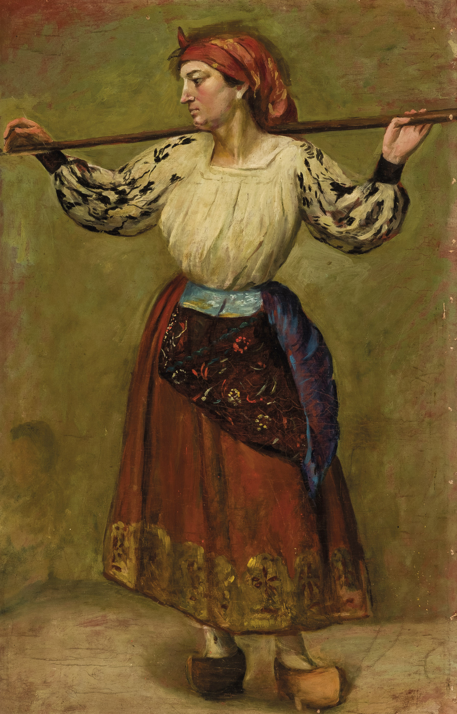
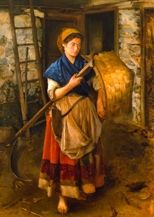
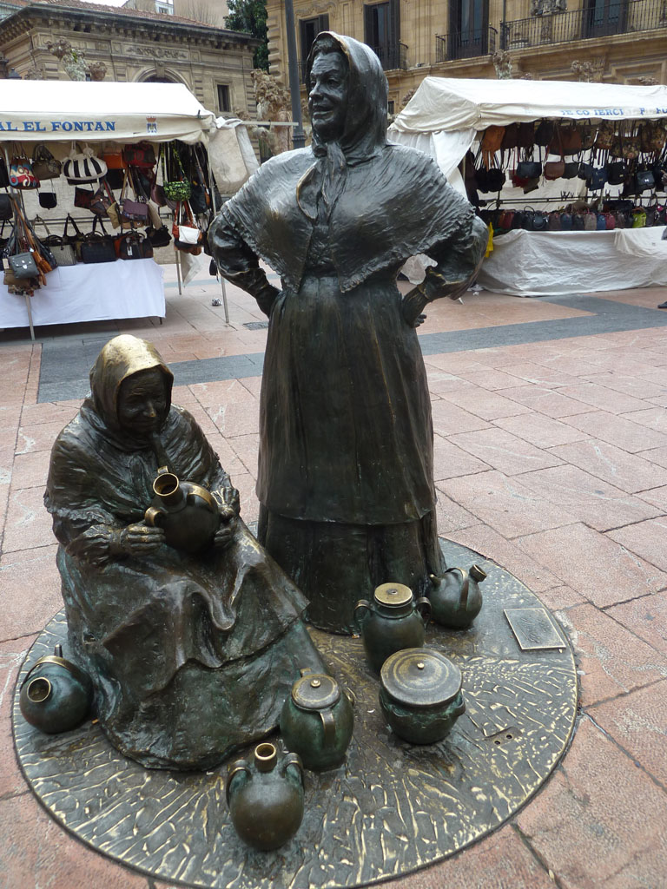
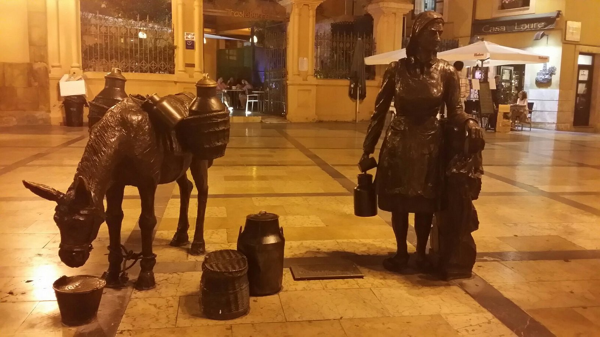

📍 C. San Vicente, 3, 33003 Oviedo, Asturias
🕒 Open · Closes 8:00 PM
🌐 museoarqueologicodeasturias.com
📞 985 20 89 77
Capítulo 1: Hombres comunes y corrientes,
un llamado poco común
Jesús eligió a sus discípulos no entre los sabios, poderosos o nobles, sino entre gente sencilla (1
Corintios 1:26-29). Fueron llamados en distintas etapas: primero a la conversión, después al discipulado
y finalmente al apostolado. Aunque tenían limitaciones humanas, fueron preparados para llevar el
evangelio al mundo entero. Dios eligió lo débil y lo necio del mundo para demostrar su poder.
Capítulo 2: Pedro, el apóstol impetuoso
Pedro era el líder natural entre los doce, conocido por su pasión y su impulsividad. Aunque
frecuentemente hablaba sin pensar y a veces cometía errores, Jesús lo moldeó en un líder firme. Pedro
fue testigo de momentos clave, como la transfiguración, y aunque negó a Jesús tres veces, fue restaurado
para convertirse en uno de los pilares de la iglesia primitiva.


Coleccion de pinturas asturianas del siglo XlX

